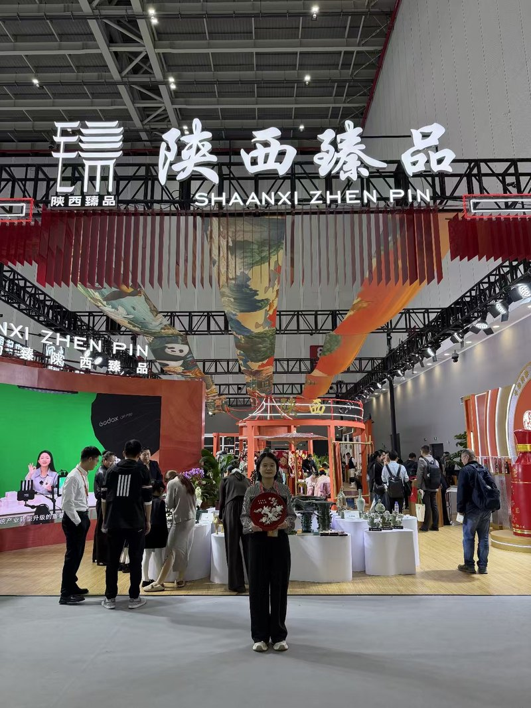

11月20〜22日、第一回歴史経典産業博覧会が浙江省杭州で開催されました。正大明文化産業集団は招待を受けて出展し、大漆漆器を「陝西臻品」テーマ展示区に展示。耀州窯・西鳳酒・陝茶・秦薬・絲綢・秦繍など陝西を代表する歴史経典産業と並び、全国から集まったバイヤー・流通業者・デザイン機関・投資家に秦巴髹漆の現在の姿をお伝えしました。

初の全国専門博、六つの業種が一堂に
本博覧会は中国における歴史経典産業分野初の全国的な専門博で、「経典伝承・新質興業」をテーマに、絲綢・茶・陶磁・漢方薬・醸造・工芸美術の六業種が集まりました。陝西省は歴史経典産業の団体で出展し、「陝西臻品」テーマ展示区では無形文化遺産の生きた伝承、製品革新、産業融合の最新成果を集中的に紹介。中華文明の重要な発祥地であり古のシルクロードの起点である陝西の厚い産業蓄積を示しました。
「陝西臻品」に並ぶ漆
展示台では、正大明が持ち込んだ大漆漆器の温潤な光沢と髹飾文様が来場者の足を止めました。漆樹を植え、漆を割り、漆を練り、器を成す——正大明が歩むのは秦巴髹漆の「源」の道です。牛王生漆「漆色は油のごとく、光沢は澄みわたる」という品質を基盤に、彩色漆の描画・変塗・描金・螺鈿などの髹飾技法を経て、鑑賞にも使用にも堪える器が生まれます。「百里千刀一斤漆」。一つの器の背後には、一本の漆樹と幾代もの漆人の時間があります。

展示から協業へ——産業紹介会
博覧会の重点関連イベントとして、「陝耀経典・絲路新章——陝西省歴史経典産業紹介会」が11月21日に杭州国際博覧中心で同時開催され、開幕上演・専門報告・産業紹介・成果発表・プロジェクト調印などのプログラムが組まれました。陝西省工業和信息化庁党組成員・張康寧副庁長は、地理的表示産品と地域公共ブランドの育成体系にもとづき「陝西臻品」の育成梯队を構築し、伝統工芸と特色農業・食品加工・文化観光の深度融合を進め、伝統技芸の標準化・デジタル化・産業化を促し、ライブ配信・展示推介・文化観光連携などの市場チャネルを広げていると紹介しました。
会では安康市および西鳳酒・涇渭茯茶など重点地市・企業が登壇し、陝西省工業和信息化庁主編『陝西民間工藝美術發展史錄』が正式に発表されました。同書には牛王生漆油漆技芸第四代伝承者・袁輝志による陝南漆工芸発展史が収録されています（関連記事）。また西湖大学に何尊の工芸複製品が贈呈され、重点産業協力プロジェクトの集中調印も行われました。

中国漆を、時代に再び見いだされるものへ
自動車コックピットのCMF論議から大学の美育実践、そして国家級の展示会と省級の史録まで——漆はより多くの場で見られ、使われ、記録されるようになっています。正大明にとって出展は終点ではなく、古い技を現代の産業チェーンと暮らしへと橋渡しする一歩です。今後も秦巴髹漆の全工程を深耕し、パートナーの皆様とともに、中国漆が時代に再び見いだされるよう取り組んでまいります。